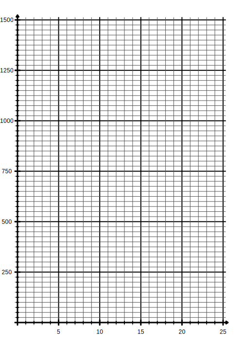
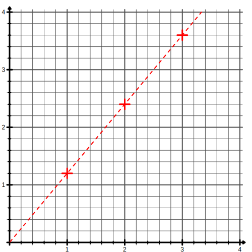
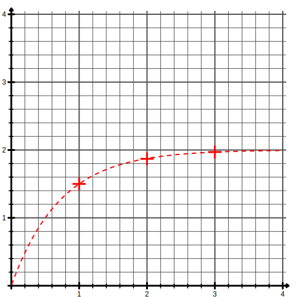
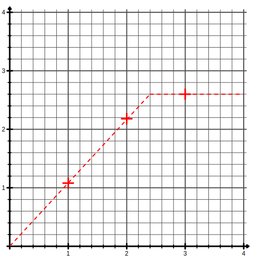
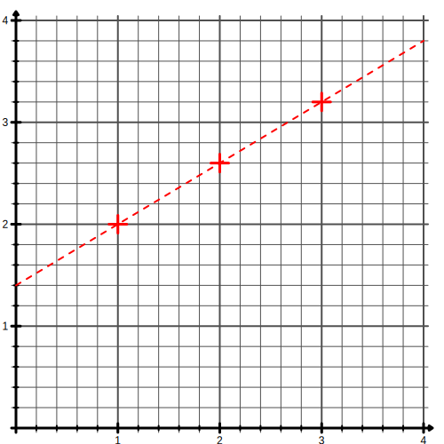
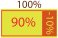
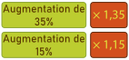
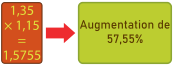

Un chocolatier doit préparer des tablettes de chocolat contenant 60% de cacao pur.
Il souhaite faire le mélange pour préparer plusieurs tablettes de 100g chacunes.
Calculer la masse de cacao pur dans une seul tablette.
Completer le tableau de proportionnalité suivant :
Nbr tablette(s)
1
5
10
15
20
Masse de cacao pur
Pour ce simplifier la tâche, il voudrais représenter cela graphiquement et l'afficher dans son atelier.
Représenter les données de ce tableau dans le graphique ci-contre.
Que peut-on dire de la courbe obtenue ?
Ce même chocolatier mélange ensuite 150g de chocolat contenant 60% de cacao pur avec
250g de chocolat contenant 80% de cacao pur. Il souhaite alors calculer la teneur en cacao pur de son mélange.
Calculer la masse de cacao pur dans la première tablette.
Calculer la masse de cacao pur dans la seconde tablette.
En déduire la masse de cacao pur dans le mélange.
Quel pourcentage de cacao pur contient alors le mélange ?

Caractérisation graphique d'une situation de proportionnalité.
Propriété :
Une situation de proportionnalité est représenté graphiquement dans un repère par
une droite passant par l'origine du repère.
Si une situation est représenter graphiquement par une droite passant par l'origine du repère,
alors c'est une situation de proportionnalité
Exemple :




Pourcentages :
Définition :
Un pourcentage est une proportion de dénominateur 100. On la not avec le symbole %
Exemple :
$\frac{23}{100} = 23\%$ on lit ici "23 pour cent"
Pour transformer une proportion en pourcentage, on utilise le produit en croix :
$\frac{7}{8}=\frac{?}{100}$ → $7\times100\div8=87,5$ donc $\frac{7}{8}=87,5 \% $
Remarque :
On peut passer par l'écriture décimal d'une proportion pour retrouver le pourcentage :
$\frac{1}{2}=0,5=50\%$
$\frac{1}{4}=0,25=25\%$
$\frac{3}{5}=0,6=60\%$
$\frac{18}{15}=1,2=120\%$
Il suffit de multiplier la valeur décimal par 100.
Pour prendre le pourcentage d'un nombre, il suffit de multiplier ce nombre par le pourcentage : 30% de 700€ → $700\times 30\% = 700\times \frac{30}{100} =700\times 0,3= 210$€
Attention, le symbole % doit bien être présent dans le calcul, ce n'est pas une unité mais un opérateur.
Augmentation et réduction :
Pour effectuer une augmentation (ou une réduction) d'un certain pourcentage sur une valeur, on ajoute ou retranche le pourcentage de cette valeur.
Exemple :
Une augmentation de 37% pour une valeur de 400 :
$400 + 35\%\times400=400+140=540$
On peut aussi voir ça ainsi : 400 est 100% de la valeur. On ajoute 37% on prend donc 137% de la valeur : $400\times137\%=450$
Une augmentation ou une réduction peut être ramener à un coefficient et inversement.
Une fois le coefficient trouvé, on peut l'appliquer à une valeur en les multipliant.
Augmentation de 25% → 100% +25% = 125% = 1,25
Augmentation de 77% → 100% + 77% = 177% = 1,77
Réduction de 10% → 100% - 10% = 90% = 0,90
Réduction de 54% → 100% - 54% = 46% = 0,46
1,12 = 1 + 0,12 → Augmentation de 12%
2,05 = 1 + 1,05 → Augmentation de 105%
0,75 = 1 - 0,25 → Réduction de 25%
0,21 = 1 - 0,79 → Réduction de 79%

Augmentation et réduction succesives :
Lorsque l'on effectue deux augmentations (réductions) succesives,
l'augmentation correspondant n'est pas la somme des deux pourcentages.
Exemple :
Une augmentation de 37% pour une valeur de 400 :
$400 + 35\%\times400= 540$
Une nouvelle augmentation de 15% pour 540 :
$540 + 15\%\times540=621$
Pourtant : $400 + (37\% + 15\%)\times400=608$
l'augmentation total n'est donc pas de 52% (37+25)
Pour trouver le pourcentage d'augmentation total, il faut multiplier les coefficients :
$1,35 \times 1,15 = 1,5755$ donc une augmentation de 57,55%


De même une réduction de 10% suivit d'une réduction de 25% est équivalent à :
$(1-0,10)\times(1-0,25)=0,9\times0,75$ $=0,675 = 1-0,325$
donc une réduction de 32,5%